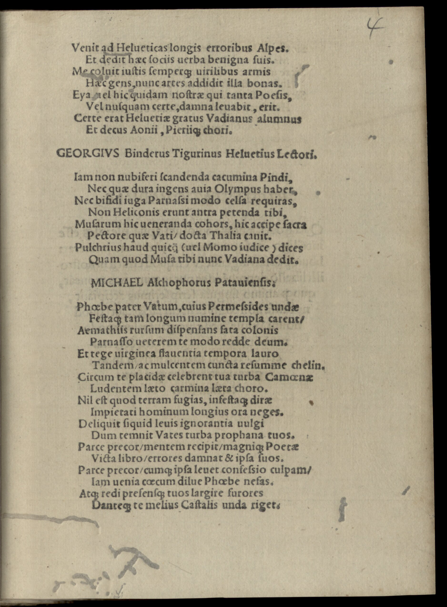
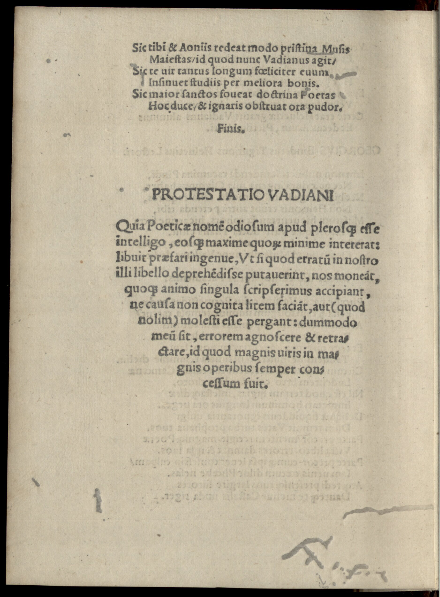

Watt 26 (Michael Alchover)
Faksimile


Transkription
Michael Alchophorus Patavensis.
Phoebe pater Vatum, cuius Permessides undae
Festaque tam longum numine templa carent,
Emathiis rursum dispensans fata colonis
Parnasso veterem te modo redde deum.
Et tege virginea flaventia tempora lauro
Tandem, ac mulcentem cuncta resumme chelyn.
Circum te placidae celebrant tua turba Camenae
Ludentem laeto carmina laeta choro.
Nil est quod terram fugias, infestaque dirae
Impietati hominum longius ora neges.
Deliquit siquid levis ignorantia vulgi
Dum temnit Vates turba prophana tuos.
Parce precor, mentem recipit, magnique Poetae
Victa libro, errores damnat et ipsa suos.
Parce precor, cumque ipsa levet consensio culpam,
Iam venia caecum dilue Phoebe nefas.
Atque redi praesensque tuos largire furores
Danteque te melius Castalis unda riget.
Sic tibi et Aoniis redeat modo pristina Musis
Maiestas, id quod nunc Vadianus agit,
Sic te vir tantus longum feliciter aevum
Insinuet studiis per meliora bonis.
Sic maior sanctos foveat doctrina Poetas
Hoc duce, et ignaris obstruat ora pudor.
Finis.Übersetzung
Michael Alchover aus Passau.
Phoebus, Vater der Dichter, dessen Wellen des Permessus, Feste und Tempel so lange keine göttliche Macht hatten, verteile den emathischen Siedlern wieder Göttersprüche und mach dich am Parnass bald zum alten Gott! Und bedecke die blonden Schläfen schließlich mit jungfräulichem Lorbeer und nimm wieder die Lyra auf, die alles erfreut! Rundum preisen dich die gnädigen Musen, deine Schar, wenn du fröhliche Lieder im fröhlichen Reigen spielst. Es gibt keinen Grund, dass du vor der Erde fliehst und der grauenvollen Gottlosigkeit der Menschen länger feindselige Augen verwehrst. Wenn die leichtsinnige Unwissenheit des Volks sich etwas zu Schulden kommen lassen hat, während die gottlose Schar deine Seher verachtet, <dann> bitte verschone <sie>, und weil die Einigkeit selbst die Schuld wegnimmt, entkräfte, Phoebus, den blinden Frevel schon mit Güte! Kehre zurück und spende anwesend reichlich deine Raserei und wenn du sie gibst, strotzt die kastalische Woge besser. So möge dir und den aonischen Musen bald das frühere Ansehen zurückkehren, das, was nun Watt antreibt; so möge dich ein so großer Mann erfolgreich lange Zeit <seinen> (literarischen) Bestrebungen hinzufügen, die durch Besseres gut <werden>. So möge die größere Bildung unter diesem Anführer die heiligen Dichter fördern und die Ehrfurcht den Unwissenden die Augen verschließen.
Ende.Metadaten
| Titel des Gedichts: | Michael Alchophorus Patavensis. |
| Autor der Gedichts: | Michael Alchover (Michael Alchophorus) |
| Containerwerk: | De poetica et Carminis ratione liber ad M. Vad. fratrem, Wien 1518 |
| Autor des Containerwerks: | Joachim Watt (Joachim Vadianus) |
| Gattung des Containerwerks: | Fachschriftstellerei, Poetik |
| Erscheinungsjahr: | 1518 |
| Verschlagwortung: | Poetologie, Wiederherstellung der Dichtung, Apoll, Dichter, Dichtung, Dichtkunst, Lorbeer, Lyra, Parnass, Gott, Lied, Unwissen, Wissen, Rückkehr, Inspiration, Italien, Ruhm, Bildung, Muse, Quelle, Musenquelle, Ehrfurcht, Geheimnis, Mythologie |